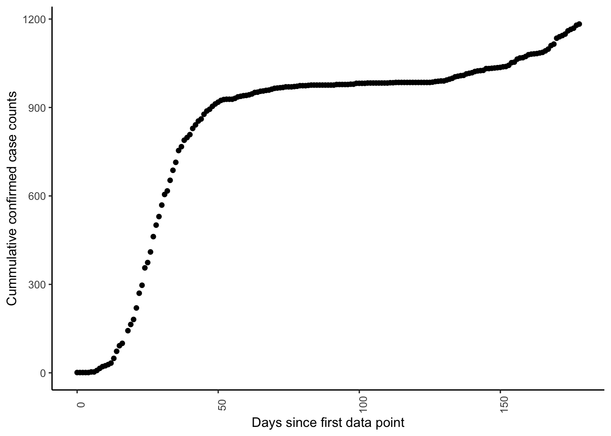

3 WIP
When I meet other modelers who work in inference, a common suggestion that comes up is to try working with RSTAN and with HMC (Hamilontian Monte Carlo). So it is only fair that I try this out. Let us analyze the COVID counts collected in Switzerland over the past months with an SIR model. I chose this model and data just out of curiosity and as a learning exercise.
DISCLAIMER: Note that this model has very simple assumptions, and the data collected has many variables that are not accounted for in the model. Also keep in mind the objective of this exercise is not to try out some inference methods on this data and not draw conclusions or suggestions for possible interventions for COVID.
3.1 Data
We will download the covid data from Switzerland from the git repo by openZH. We will specifically look at the data from the canton Basel, because I live here. We plot the data with respect to the first data point.
## date time abbreviation_canton_and_fl ncumul_tested ncumul_conf ncumul_hosp ncumul_ICU ncumul_vent ncumul_released
## 1 2020-02-27 19:17 BS NA 1 NA NA NA NA
## 2 2020-02-28 10:15 BS NA 1 NA NA NA NA
## 3 2020-02-29 15:23 BS NA 1 NA NA NA NA
## 4 2020-03-01 17:29 BS NA 1 NA NA NA NA
## 5 2020-03-02 17:15 BS 235 1 NA NA NA NA
## 6 2020-03-03 17:30 BS NA 3 NA NA NA NA
## ncumul_deceased
## 1 NA
## 2 NA
## 3 NA
## 4 NA
## 5 NA
## 6 NA
## source
## 1 https://www.coronavirus.bs.ch/nm/2020-coronavirus-erster-positiver-fall-in-basel-stadt-zweiter-positiv-getesteter-ausserkantonaler-fall-gd.html
## 2 https://twitter.com/BR_Sprecher/status/1233316679863631873?s=20
## 3 https://twitter.com/BAG_OFSP_UFSP/status/1233759578241863681?s=20
## 4 https://www.coronavirus.bs.ch/nm/2020-coronavirus-anzahl-der-getesteten-faelle-und-zwischenstand-kita-riehen-gd.html
## 5 https://www.coronavirus.bs.ch/nm/2020-coronavirus-zwei-neue-positive-faelle-in-basel-stadt-gd.html
## 6 https://twitter.com/BAG_OFSP_UFSP/status/1234880556095213569?s=20
## ncumul_confirmed_non_resident current_hosp_non_resident current_quarantined_riskareatravel current_quarantined_total
## 1 1 NA NA NA
## 2 1 NA NA NA
## 3 1 NA NA NA
## 4 1 NA NA NA
## 5 3 NA NA NA
## 6 3 NA NA NA
## diff_tested current_hosp_resident
## 1 NA NA
## 2 NA NA
## 3 NA NA
## 4 NA NA
## 5 NA NA
## 6 NA NA## Don't know how to automatically pick scale for object of type difftime. Defaulting to continuous.
Rather than plotting the cumulative cases, we may be interested to look at the confirmed cases on days we obtained data. To visualize the trend, we also fit a generalized additive model model using an assumption that the likelihood of the data can be described with a Poisson distribution (with a log link function).
## Don't know how to automatically pick scale for object of type difftime. Defaulting to continuous.